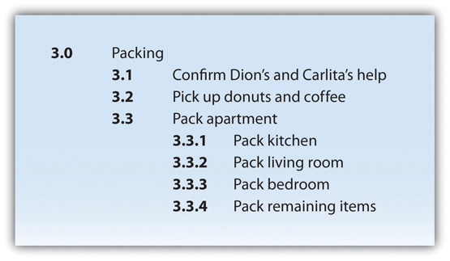
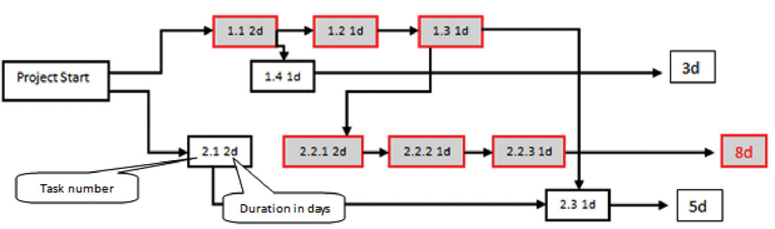
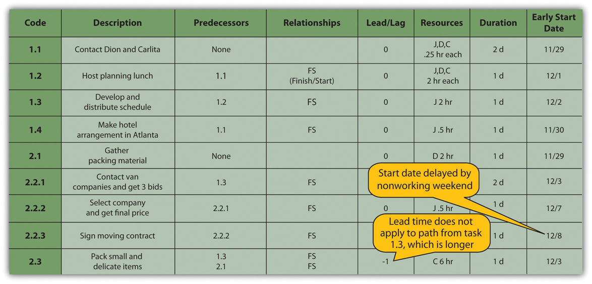
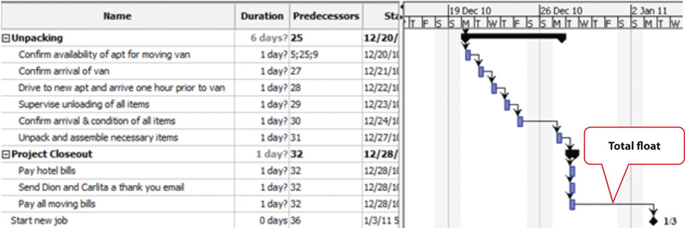

The project scope identifies the objectives of the project, what activities will be performed, and some of the activities that are not included in the project. The scope document is used to create a master schedule that identifies important dates and activities. In this chapter, the student learns how the scope and schedule are developed.
Project planning and scheduling is both an art and a science. No two project managers or planning professionals develop identical plans or project schedules. The planning process is creative and reflects the planner’s approach and style. Even though the project plan is unique to the approach and style of the planner, methods for developing the schedule and documenting the resulting plan follow certain rules.
On larger and more complex projects, a planning function composed of a small team of planning and scheduling experts may be needed to develop and track the project schedule. Project planners facilitate the development of the information required to develop the project plan using templates, past or similar projects, and most importantly, the thoughts and plans of the project team leaders and members. On a smaller project, the project manager may be responsible for accomplishing this planning function.
After gathering this information, the planner begins developing the project’s master scheduleSchedule with key dates and activities.—a summary level schedule that encompasses the entire project scope—that includes major events and provides a view of the entire project. Working with the project team, the planning continues to include more details as additional information becomes available. The schedule continues to evolve during the life of the project, and major revisions may be necessary in response to events both inside and outside the project that change critical dates on the schedule.
Determining the schedule of activities that comprise the project is a key element of project management.
The schedule develops as the project moves from its early conceptual phase into the execution phase.
When the scope of the project is being determined, a simple schedule that shows the major tasks and approximate start and end dates is developed to allow senior management to make decisions about the scope of the project. Detail is not required at this stage because entire tasks might be dropped from the scope, or the whole project might not be approved.
If the project is chosen, a master schedule is created. It has major events and dates such as the starting date and the completion date. The master schedule is often part of a contract. Changes to the master schedule must be approved using a documented change process with approval by the project sponsor and client.
To execute the master schedule, the major activities are broken down into smaller activities and resources are assigned to those activities. The most detailed versions or portions of the schedule may be developed a few weeks prior to the execution of those activities and are called two-week plansThe most detailed version or portion of the schedule that is developed a few weeks prior to the execution of those activities.. Portions of the master schedule that affect particular vendors might be sent to them so they can provide detailed activities that they would perform.
Conceptual Schedule
Choose an activity that you are considering and describe a conceptual schedule for it. Limit the schedule to between five and ten major sections. Make a rough estimate of the duration and cost of each phase.
According to the Project Management Institute (PMI), project time management includes the following elements:Project Management Institute, Inc., A Guide to the Project Management Body of Knowledge (PMBOK Guide), 4th ed. (Newtown Square, PA: Project Management Institute, Inc., 2008), 129.
The list of activities, their relationship to each other, and estimates of durations and required resources comprise the work breakdown structure (WBS). The project WBS is a hierarchicalClassified according to criteria into successive levels.—classified according to criteria into successive levels—listing and grouping of the project activities required to produce the deliverables of the project. The WBS represents a breakdown of the project into components that encompass the entire scope of the project. Each level of the WBS hierarchy represents a more detailed description of the project work so that the highest level represents broad categories, and the lower levels represent increasing amounts of detail.
Larger and more complex projects often require a larger WBS. The size of the WBS is directly related to the amount of work on the project and how that work is divided into work packages. The WBS can be developed around the project phases or the project units or functions that will be performing the work. A WBS organized around the project phases facilitates the understanding of the amount of work required for each phase of the project. A WBS developed around the project units or functions of the project facilitates the understanding of the amount of work required for each function.
The following example, named John’s move, has a low level of complexity compared to a larger project. Normally, this project would not receive the amount of detailed planning described in the following examples, but the authors chose to use a basic project that is familiar to most students to help them focus on learning the new concepts.
John has a small but important project. He has accepted a job in Atlanta and now has to move from Chicago to Atlanta and be there, ready to work, right after the Christmas holidays. If the furniture arrives in good condition at least two days before John starts work, and for less than Five thousand dollars, the project will be a success. The move to Chicago five years ago cost five thousand dollars, but John is smarter now and will use his friends to help, so he is confident he can stay within budget.
Developing a WBS begins by defining and developing lists of all activities—work performed on the project that consumes project resources, including cost and time—needed to accomplish the work of the project. The first draft of the WBS includes activities at the highest level of the hierarchy or the management level and typically includes the major activities or summary activities required to accomplish the deliverables identified in the project scope of work.
On John’s move project, these top-level activities are numbered 1.0, 2.0, 3.0, and so on. For example, a plan for the move is the major deliverable from 1.0 Plan Move, as shown below.
Figure 8.3 Top Level of WBS
The work breakdown structure is then decomposedSeparated into basic elements.—broken down into smaller units. The 1.1, 1.2, and 1.3 numbers are the first subdivision of the work. For example, one of John’s Summary Level Activities is Packing (3.0). Although some minor packing (delicate items: 2.4) are packed under another summary activity, 3.3 is the major packing and includes the coordination and support of labor (friends Dion and Carlita). The activity is then decomposed—separated into basic elements—to the next level by listing the individual rooms that need packed, as shown below.
Figure 8.4 Major Activity Decomposed into Smaller Activities
The WBS could be decomposed further to a greater level of detail by listing the tasks needed for each activity. For example activity 3.3.3, Pack Bedroom, can be decomposed into additional tasks, such as 3.3.3.1 Pack Closet, 3.3.3.2 Pack Drawers, and 3.3.3.3 Pack Blankets. This type of numbering of the activities is called intelligent numbering. In intelligent numbering, the numbering system has meaning so that a member of the project team knows something about the activity by the number of the activity. For example, any activity associated with packing begins with a 3; even picking up donuts can be an activity that supports packing. The donuts are a form of payment for the labor of Dion and Carlita.
The WBS is developed or decomposed to the level that the manager needs to control or manage the project. Typically, larger and more complex projects require a more detailed WBS.
After the project team has created the WBS, each activity is reviewed and evaluated to determine the durationTime from beginning to end of an activity. (how long it will take to accomplish from beginning to end) and what resourcesTime and materials. (time, materials, facilities, and equipment) are needed. An estimate is an educated guess based on knowledge, experience, and inferenceProcess of deriving conclusions based on assumptions.—the process of deriving conclusions based on assumptions. The accuracy of the estimate is related to the quality of the knowledge and how that knowledge is applied. The person with the most knowledge may not be the most objective person to provide duration estimates. The person responsible for the work may also want to build in extra time. Multiple inputs into the duration estimate and a more detailed WBS help reduce bias—the making of decisions based on a prejudged perspective.
The unit of time used to develop the activity duration is a function of the level of detail needed by the user of the schedule. The larger and more complex the project, the greater the need for detail, which usually translates into shorter durations for activities.
On a new plant start-up, the plant manager may need to know when the new employees will start training, when they will be fully trained, and when they can begin working in the plant. The plant human resources manager may need to know what skills workers need and how much time each training class will take. The schedule detail the HR manager needs will include activities to locate facilities, schedule training, write contracts for trainers, and manage the initiation of training classes. The trainer will need an even greater level of detail, which could be measured in days or even hours.
On our John’s move example, the project schedule may have been just as effective without detailing the packing of the individual rooms in the old apartment. If we deleted these items, would John know when he needed to pack each one of these rooms? If the answer is yes, then we may not need that level of detail.
The activity duration is the length of time the activity should take to complete from beginning to end. The unit of duration is typically working days but could include other units of time such as hours, weeks, or months. The unit chosen should be used consistently throughout the schedule.
An important event, such as a ground-breaking ceremony or receipt of occupancy from the building inspector, is called a milestoneAn important point in a project without duration or resources.. A milestone has no duration or resources. It is simply an indicator of an important point in the project.
A common resource constraint is availability. To consider the availability of team members, consultants, and key pieces of equipment, you can create a resource calendarCalendar that indicates working days and days off for a group or individual. for each that indicates which days are available and which are days off for a group, an individual, or a project asset such as a piece of important equipment. A calendar for team members from the same company could be the company calendar that shows working days, weekend days, and holidays. Individual team members can have individual calendars that show their vacation days or other days off, such as parental leave days. If major pieces of equipment are only available for certain periods of time, they can be given a resource calendar. Resource calendars become important tools when changes must be made to the schedule. When a resource calendar is applied to a duration estimate, the duration in days is distributed across the available calendar days. For example, if the duration is three days and the start date of the activity is Thursday, the activity would begin on Thursday and end on Monday of the following week, assuming the resource calendar shows that the person has the weekend off. If the weekend included an extra day off for a holiday like Labor Day, shown in the calendar in Figure 8.6, the completion day of the same three-day activity would be pushed to Tuesday.
Figure 8.6
Nonworking days can be designated in a calendar.
Determining the schedule of a project begins by examining each activity in the WBS to determine its relationship to the other activities.
The project logicActivity sequence showing predecessor and successor activities. is the development of the activity sequence or determining the order in which the activities will be completed. The process for developing the project logic involves identifying the predecessorsActivity that comes before.—activities that come before—and successorsActivity that comes afterward.—the activities that come after.
In our example of John’s move, contacting Dion and Carlita—activity 1.1—comes before the lunch meeting is scheduled. You must logically contact Dion and Carlita before you schedule your Host Planning Lunch—activity 1.2. Your conversation with Dion and Carlita will provide you with dates they are available and establish their commitment to help you move. Therefore, the conversation with Dion and Carlita is a predecessor to the Host Planning Lunch Activity. This relationship is diagramed below.
Figure 8.7 Relationship between Two Activities

These terms define a relationship that is similar to a family relationship like father and son. The father exists in time before the son. Similarly, each element of the diagram can have predecessor-successor relationships with other elements, just like a father can be the son of someone else. Unlike the biological father-son relationship, activities can have more than one predecessor.
The relationship between a predecessor activity and a successor activity is called a dependencyRelationship between activities that affects their sequence.. The successor activity starts after and is dependent on the predecessor activity. Because the conversation with Dion and Carlita must take place before a planning meeting can be scheduled, this is called a natural dependencySequence that can be determined logically. because the relationship can be inferred logically. Activities that have predecessor-successor relationships occur sequentiallyOne after the other.—one after the other. Another term for this type of relationship is finish-startSequence of activities where the first activity must end before the next activity can begin., which means the first activity must finish before the next one can start. Refer to the figure above.
Some activities take place concurrentlyAt the same time.—at the same time. If they must begin at the same time, they have a start-startConcurrent activities begin at the same time. relationship. If the activities can start at different times but they must finish at the same time, they have a finish-finishConcurrent activities end at the same time. relationship. Refer to Figure 8.8.
Figure 8.8

Concurrent activities can be constrained to finish at the same time or start at the same time.
The figure below shows the activities in John’s move with the predecessors identified for the Plan Move and Prepacking groups of activities. Because the finish-start relationship is by far the most common, the type of relationship is assumed to be finish-start unless otherwise mentioned.
Figure 8.9 Outline of Activities with Predecessors Identified

Most activities in a network diagram have a finish-start relationship. If a certain amount of time must go by before a successor activity can begin, the required delay is called lag timeAmount of time that must separate the finish of one activity and the start of the next sequential activity.. For example, concrete does not reach its full strength for several days after it is poured. Lag time is required between the end of the pouring process and the beginning of construction that puts stress on the concrete as diagrammed in Figure 8.10. Similarly, you must allow lag time for payment checks to be processed by the banking system before you can spend the money.
Figure 8.10
Required time between activities is lag time.
In some cases, the successor activity can overlap the end of its predecessor activity and begin before the predecessor is finished. This is called lead timeAmount of time that the start of the next activity can overlap the finish of its predecessor..
In John’s move, you might begin separating the small and delicate items that will be packed in step 2.3 before you get the packing materials in step 2.1 so that when the materials are available, step 2.3 is already partially completed. If the preparing the small items for packing can overlap its predecessor and shortens the time it takes to accomplish both tasks by a day, it has a lead time of one day.
Figure 8.11

Overlap is called the lead time of the successor activity.
The characteristics and identifiers of an activity are its attributesCharacteristic of an entity or object..
At this point in the process of analyzing John’s move, each activity has an identifying code, a short description, predecessors, and lead or lag times, as shown in a partial table of activities in Figure 8.12 "Table of Attributes".
Figure 8.12 Table of Attributes
Milestones are significant events in your project. An effective milestone schedule will capture the major constraints to the project schedule and provide a summary level overview of the project. Even though milestone events are significant to the project, they consume no resources and have no duration. Milestones are usually indicated on the project schedule with a diamond and often have a vertical line on a time-scaled graph to show the relationship of various schedule paths to the milestone.
In our John’s move project, we might create a milestone called “all packing complete” to represent the date when everything is packed and ready for the moving van. Any delay in this date will mean a delay in the arrival of the moving van in Chicago, a delay in the arrival of the moving van in Atlanta, and a delay of all the unpacking and other downstream activities. See Figure 8.13 "Gantt Chart".
Relationships between activities are easier to recognize if they are presented using graphics such as bar charts or a network of connected boxes.
The type of bar chart used to illustrate activity relationships in a project is the Gantt chartBar chart used to indicate duration and relationships between project activities.. The Gantt chart was developed by Henry Gantt and used on major projects, including building the Hoover Dam and the U.S. interstate highway system.Reference.com, “Henry Gantt,” http://www.reference.com/browse/wiki/Henry_Gantt (accessed July 27, 2009). The Gantt chart, also called a bar chart, is a time-scaled graphic that represents each activity with a bar that reflects the duration, start, and finish time, as shown in Figure 8.13 "Gantt Chart".
Figure 8.13 Gantt Chart

A Gantt chart is easy to read and provides sufficient information for project team members to plan activities within a short time frame. For many larger projects, a two-week bar chart, extracted from the larger master schedule, provides the information needed for team members and contractors to coordinate activity details. The Gantt chart provides information for simple planning but is limited because a Gantt chart does not illustrate complex relationships well.
People recognize relationships and patterns more effectively when they look at diagrams like the one in Figure 8.14 "Project Network Diagram". The precedence diagram method (PDM)Technique for graphically displaying the logic of scheduled activities using boxes and arrows. is a technique for graphically displaying the logic of the schedule by placing the activities in boxes with arrows between them to show the precedence-successor relationships. The boxes in this type of diagram are called nodesAn activity in a network diagram. and the arrows indicate finish-start relationships. Compare the diagram in Figure 8.14 "Project Network Diagram" to the outline in Figure 8.9 "Outline of Activities with Predecessors Identified" to see how much easier it is to trace a sequential path from one activity to the next in the precedence diagram. This type of diagram is also called a project network diagramGraphic representation of the sequencing of project activities..
Figure 8.14 Project Network Diagram

Compare Charts
Perceptions of graphic representations of data differ among individuals. Consider the bar chart and network diagram in this section. Describe which type of chart conveys the important aspects of the project best to you personally and why you think that is the case. Alternatively, describe which aspects of the project are conveyed to you best by which type of chart.
The critical pathSequence of activities through the network that results in the latest completion date of the project. is the path through the network that results in the latest completion date of the project.
If any activity on the critical path is delayed, the completion of the project will be delayed by an equal amount. It is the path with the greatest total duration. To determine the critical path, add the amount of time estimated for the duration of each activity to the previous activity to determine which path through the network has the longest total duration, as shown in Figure 8.15 "Critical Path". Durations are indicated in days. The critical path through these tasks takes at least eight days. Activities on the critical path are shaded.
Figure 8.15 Critical Path
Starting dates can be assigned to each activity by doing a forward passThe process of determining the earliest starting date for each activity by beginning at the project start date and adding the activity durations, resulting with the early finish date for the project. proceeding from left to right in the network diagram beginning with the project start date. The dates derived by this method are the early start (ES) datesThe soonest date an activity can begin determined by the project start date and the durations of its predecessor activities.. The early start date for an activity is the earliest date the activity can begin. The estimate considers durations and resource availability calendars. To calculate early start dates, begin with the project start date and assign that date as the start date of activities that have no predecessor activities. Follow these steps to calculate the early start dates of subsequent activities, assuming finish-start relationships:
John begins planning his move to Atlanta the same day he accepts the job. The start date in this example is Monday, November 29, 2010. Tasks 1.1 and 2.1 can both start on that day, so the early start dates for tasks 1.1 and 2.1 are November 29. John calculates the early start date for the activities. A partial list is provided below. Compare the figure below and the figure in the next sidebar. Observe that John is willing to work on weekends, but activity 2.2.3 is delayed by two days because one of the moving companies did not provide bids on the weekend. Observe that activity 2.3 has a lead time of one day, but that relationship is between activity 2.1 and 2.3. The network path from activity 1.3 is longer, so the lead time with activity 2.1 is not considered in calculating the early start date of 2.3.
Figure 8.16 Early Start Dates Determined by a Forward Pass
Doing this process manually is error prone and time consuming. Fortunately, there are computer programs to assist in the process, but the project manager must understand the process well enough to recognize computer errors. Computer software must be combined with common sense or good judgment.
FloatThe amount of time an activity can be delayed from an early start without delaying the completion date., sometimes called slack, is the amount of time an activity, network path, or project can be delayed from the early start without changing the completion date of the project.
Total floatThe amount of time the project start date can be delayed without delaying the project completion date. is the difference between the finish date of the last activity on the critical path and the project completion date. Any delay in an activity on the critical path would reduce the amount of total float available on the project. A project can also have negative floatThe amount by which the early completion date exceeds the project completion date., which means the calculated completion date of the last activity is later than the targeted completion date established at the beginning of the project.
The last activity in John’s move has an early start date of December 28 and a duration of one day. John could start work on Wednesday, December 29. John’s first day at work is Monday, January 3, so the project has a total float of five days.
Figure 8.17 Total Project Float
The next step is to work through the network diagram from right to left beginning with the mandated completion date, which is a milestone that is set in the project plan. Subtract the duration of each activity in each path to determine the latest date the activity could begin and still meet the project completion date. Resource calendars must be considered in the backward pass as well as the forward pass.
To calculate late start dates, begin with the project completion milestone and assign that date as the finish date of its predecessor activities. Follow these steps to calculate the late start dates of predecessor activities, assuming finish-start relationships:
The difference between the early start date and the late start date for activities on the critical path is usually the same as the total float, unless the activities are affected by the resource calendars differently in the forward and backward pass. For example, if a piece of key equipment is only available for a few days, activities that depend on it have the same start and finish dates in the forward and backward passes.
If activities that are not on the critical path have a difference between their early start date and their late start date, those activities can be delayed without affecting the project completion date. The float on those activities is called free floatThe time an activity that is not on the critical path can be delayed without delaying the start of a successor activity..
Project Float
Consider a project in which you have been involved that experienced unexpected delays. Describe how the project’s manager dealt with the delays. Specifically, consider if the delay was due to an activity that was on the project’s critical path, if people or resources were diverted from other tasks, or if free float existed in the original schedule. Describe the ultimate effect on the project’s completion date.
To manage a schedule, the project manager must know how the work is progressing compared to the master schedule and, if necessary, make changes to keep the project on time.
Tracking the schedule performance involves measuring the work performed against the work expected to be performed with a given expenditure of resources. Periodic reporting on the progress of the project provides the project management team with information on how the project is performing against expectations and to make decisions and corrections. Accurate measurement of schedule performance requires planning during the early stages of the project to determine the unit of measure and process for tracking progress.
To determine the percentage of a project that has been completed, the project manager must determine what to measure. Some percentages are misleading. For example, a project that has completed 25 percent of the scheduled activities does not mean that the project is 25 percent complete. In our John’s move example, four rooms were to be packed. After the bedroom was packed, packing was not 25 percent complete. The kitchen contained five times as many items and required more delicate, time-consuming packing. John estimated that 40 percent of the items to be packed were in the kitchen, 20 percent in the living room, 20 percent in the bedroom, and the remaining 20 percent in miscellaneous locations. If the unit of measure for these activities is items packed, the packing is only 20 percent complete instead of 25 percent if rooms are the unit of measure.
The unit of measure for tracking schedule progress is related to the estimate. If hours of labor are used as the unit of measure, the percentage of packing is even less because more time is estimated to pack each item in the kitchen. As the project management team estimates the duration for each activity, the amount of work to accomplish the tasks is captured in both resources expended and a unit of measure for tracking progress. The unit of measure is related to the type of project. On a software development project, the unit of measure may be lines of code written. The unit of measure that is chosen can affect the quality of the work.
Steve Ballmer of Microsoft recalls early clashes with IBM over the unit of measure used to determine how much Microsoft would get paid for its work.
In IBM there’s a religion in software that says you have to count K-LOCs, and a K-LOC is a thousand lines of code. How big a project is it? Oh, it’s sort of a 10 K-LOC project. This is a 20 K-LOCer. And this is 50 K-LOCs. And IBM wanted to sort of make it the religion about how we got paid. How much money we made off OS/2, how much they did. How many K-LOCs did you do? And we kept trying to convince them—hey, if we have—a developer’s got a good idea and he can get something done in 4 K-LOCs instead of 20 K-LOCs, should we make less money? Because he’s made something smaller and faster, less KLOC. K-LOCs, K-LOCs, that’s the methodology. Ugh anyway, that always makes my back just crinkle up at the thought of the whole thing.Robert X. Cringely, Triumph of the Nerds, June 1996, http://www.pbs.org/nerds/part2.html (accessed July 27, 2009).
In this case, IBM’s insistence on using thousands of lines of code as the unit of measure did not reward Microsoft for writing smaller code that would run faster. Microsoft and IBM cancelled their joint project for writing an operating system named OS/2. Microsoft wrote Windows, and IBM’s OS/2 operating system was not able to compete with it successfully.
On a construction project, a unit of measure may be yards of concrete poured, and on a training project, the unit of measure may be the class curriculums developed or the students taught.
Milestones provide the opportunity for project management to focus on completing activities that will have the greatest impact on the schedule. On complex projects, focusing on the milestones is useful for communicating important dates to the entire project team. Project team members can then adjust their efforts to complete the activities connected to the milestone events.
Many project leaders believe that time lost on early activities can be made up toward the end of the project. Hard decisions about paying overtime and working weekends are often delayed until the end of the project when the pressure to complete the project on time becomes much stronger. Project managers who focus on milestone events create a sense of urgency to meet the milestone deadlines and spread the urgency to complete the project over the life of the project. Projects that meet milestone dates are more likely to meet project completion dates.
A schedule update is distributed regularly to provide project stakeholders with an assessment of the progress of the project against the master schedule. This updated schedule is called the current scheduleAn updated schedule that show the present status of the project.. The current schedule provides new start and end dates for all activities and the project. Calculations based on the current schedule may result in a new critical path and subsequent changes in the project execution plan.
The project team develops an understanding of the project productivity by comparing the current schedule to the original schedule. If the schedule is behind original estimates, the project team conducts an assessment of the causes of the schedule slippage and develops a plan to address the changes to the project. The project management team typically has several alternatives for addressing changes to the project situation. Selecting the right alternative requires good information.
The schedule of activities is constrained by the availability of resources. If you apply the resource calendar to each activity to be sure the people and equipment are available on those dates, you can still miss an important constraint. If there are several activities that use a particular person’s time on the same days, that person could end up with too many activities scheduled for the same days and very little on other days. If key people are overloaded, the activities to which they are assigned might not be completed on time. Managing the schedule of activities to ensure that enough resources are available to complete each task by distributing the work load is called resource levelingDistributing work load to reduce uneven concentrations of work.. Activities to which that person is assigned and that have free float can be delayed to reduce work overload of key people.
The project manager must know how to accelerate a schedule to compensate for unanticipated events that delay critical activities or to accommodate changes in the project completion date. Compressing or crashing the schedule are terms used to describe the various techniques used to shorten the project schedule. Project managers utilize several techniques to keep projects on schedule.
One method of accelerating the schedule is to add activities to the critical path that are empty or that are optional. If the project is behind schedule, the time can be made up by dropping these activities. This extra time that is built into the schedule is called contingency timeAdditional time added to the schedule that can be used if a scheduled activity exceeds its estimated duration., buffer, or reserve time.
Activities that are not on the critical path that have free float can be delayed without delaying the end date of the project if they start by the late start date. Project managers can divert some resources from activities with free float to activities on the critical path without delaying the completion of the project.
The unit cost of work to be performed on a project is calculated at the beginning of the project based on the execution strategy of the project to meet the project completion date. If the project completion date is moved up, then the unit cost of work will likely increase. Conversely, a project team may be able to save money by extending the project end date. With more time, the project team may be able to schedule activities in such a way to reduce their costs. For example, an activity requiring overtime to be paid can now pay the labor at normal rates, saving the overtime premium. Changing elements of the master schedule means a change in scope. Scope changes often affect costs and require agreement by the parties who signed the original scope documents.
Another option is to allocate funds that can be used to add resources if necessary. Available resources can be increased by adding overtime to existing resource calendars or by hiring additional contract workers or renting additional equipment.
When Boeing sales of the new 878 Dreamliner Airplane exceeded expectations, contractors who were building the plane were asked to increase production while maintaining all quality and safety requirements. All contractors involved in the plane production were affected by this change.
One project team was responsible for developing and delivering training to the new employees who would be building the fuselage of the Dreamliner. Training for new employees had to be complete three months early and the project team developed an execution strategy to meet the new deadlines. The project had a month of float, so the project accelerated the schedule by two months. The team authorized overtime from forty to fifty hours a week for team members working activities on the critical path. The project team leased additional space and hired contractors to perform selected work packages on the critical path and delayed the production of library quality documents until after the critical dates on the project. Authorizing overtime and hiring contractors added a 15 percent cost to the project. Overtime and the procurement of additional contract help was authorized only for work packages on the critical path because work not on the critical path would not accelerate the schedule.
A concrete contractor on a construction project may be scheduled to lay one thousand yards of a building foundation by pouring one hundred yards a day for ten days. Foundations are on the critical path, and because of rain, the project is three days behind schedule. The project manager asked the concrete contractor to bring in a second crew and pour two hundred yards a day, and the work is complete in five days.
Another option for accelerating the schedule is the changing of the quality specifications of the product. This is usually done as a scope change.
At a midwestern university, a new building was being built, but it was behind schedule. To speed up the installation of the heating and cooling equipment, it was decided to make the zones of control larger, which meant that each floor would have fewer points where temperature was sensed and controlled and fewer air flow control boxes. The contract did not specify the zone size or how many control points were required on each floor of the building, so this change did not require a change in scope. As a result, when the sun is coming in on the south side of the building, those rooms get as much heat or cooling as the rooms on the north side, so they are often too hot. If the single temperature controller on each floor is set to a lower temperature, the rooms on the north side are too cold. The client for the building did not realize this change had been made until they were in the building for several months and the project was completed.
Progress Reports
From the client’s point of view, describe what you think would be the advantages of each type of progress measurement.
Low-complexity projects can be managed with lists of activities on paper or by using an outline in word processing or spreadsheet software. This software is inadequate for tracking complex projects. Fortunately, there are several dedicated software programs that keep track of the complex relationships between activities and resources.
Simple projects can be tracked using general purpose word processing and spreadsheet software like those available in Microsoft Office or OpenOffice. Medium-complexity projects benefit from dedicated project management software such as Microsoft Project and OpenProject. Complex projects require software that can track the interactions of thousands of tasks and produce sophisticated reports such as Oracle’s P6.
There are dozens of computer software programs available with a wide range of prices. Some open source software programs are free, but others cost up to a thousand dollars. There are several considerations for selecting a project management software besides price.
Use software that is already in use and with which most team members are already familiar. If software that is used by most team members is appropriate to the complexity of your project, it is the default choice. It is also valuable to know what software is used by key vendors or project partners so files can be exchanged electronically in the same format.
Any project management software that is selected must have the ability to track and display basic features such as the following:
Team members should be able to view the project schedule. Some software products require the use of expensive proprietary software that runs on the company’s server and that will allow several different team members to use the same schedule and restricts the use of the software to team members who have access to the company’s computer system. Other software products use a server on the Internet that is open to team members and vendors who have valid passwords.
For more complex projects, look for advanced features, such as the following:
Learning New Software
Describe the methods that work best for you when you learn a new computer program, such as self-directed exploration, a textbook, self-paced tutorials, or organized classes with an instructor. If you wanted to require that all the members of your ten-person team use project management software that was new to all of them, how would you recommend that they learn the software?
Exercises at the end of the chapter are designed to strengthen your understanding and retention of the information recently acquired in the chapter.
Write several paragraphs to provide more in-depth analysis and consideration when answering the following questions.
The exercises in this section are designed to promote exchange of information among students in the classroom or in an online discussion. The exercises are more open ended, which means that what you find might be completely different from what your classmates find, and you can all benefit by sharing what you have learned.
General purpose software such as word processing or spreadsheet programs are not capable of managing changes in relationships between activities or determining the critical path. They might suffice for the simplest projects, but more sophisticated interactive programs are needed for determining the effects of changes to interconnected activities. Small projects performed by groups with limited budgets can use open-source software such as OpenProj.
To complete this exercise, you must have permission to download and install software on your computer or use a computer that has OpenProj installed on it.
Complete the exercise by following these instructions:
Open a web browser and go to http://openproj.org. The program may be downloaded from this site, as shown in Figure 8.18 "Single User and Collaborative Versions".
Figure 8.18 Single User and Collaborative Versions
Source: Courtesy of Serena Software.
OpenProj is an open-source project management software that resembles Microsoft Project.
Open Windows explorer or your file finder program, locate the file you downloaded, and then double-click on it. Run the installation program and follow the directions on the screen.
Figure 8.19 Single User and Collaborative Versions

Source: Courtesy of Serena Software.
In the Manager box, enter your name. The current date will display in the Start Date box by default. Your date will differ from the example shown in Figure 8.20 "Identify the Project and Its Manager".
Figure 8.20 Identify the Project and Its Manager
Source: Courtesy of Serena Software.
Select cells B3 through C36, as shown in Figure 8.21 "List of Activities and Their Durations Selected in a Spreadsheet".
Switch to the OpenProj window. In row 1, below Name, click the empty box. Paste the content. (Use CTRL+V in Windows.) The activities and their durations are placed in the project window, as shown in Figure 8.22 "List of Activities and Their Durations Pasted into OpenProj".
Figure 8.22 List of Activities and Their Durations Pasted into OpenProj
Source: Courtesy of Serena Software.
In OpenProj, move the pointer to the vertical line to the right of the Start column heading. Drag this line to the left to minimize the width of the Start column. Repeat this process to minimize the width of the End column to minimize both columns, as shown in Figure 8.23 "Reduce Size of Start and End Columns".
Figure 8.23 Reduce Size of Start and End Columns

Source: Courtesy of Serena Software.
On the toolbar, click the Indent button. The four selected activities are indented as subordinate activities, and the activity in the row above becomes the group name. A black group symbol spans the group in the chart at the right, as shown in Figure 8.24 "Group Defined".
Figure 8.24 Group Defined

Source: Courtesy of Serena Software.
In the Predecessor column, in rows 3–5, type 2, 3, and 2.
The Gantt chart at the right adjusts the positions of the bars automatically and connects them with arrows to indicate their finish-start relationship, as shown in Figure 8.25 "List of Activities and Their Durations Selected in a Spreadsheet". Notice that Saturdays and Sundays are gray. They are not included as workdays. This will be addressed in a later step.
Figure 8.25 List of Activities and Their Durations Selected in a Spreadsheet

Source: Courtesy of Serena Software.
Fill in the remaining predecessors. Refer to the Predecessors column on the John’s Move worksheet or Figure 8.25 "List of Activities and Their Durations Selected in a Spreadsheet" . Notice where two predecessors are indicated, they are separated by a semicolon. Notice that activities that span the weekend days are extended by two days, as shown in Figure 8.26 "Bar Chart Showing Durations and Relationships".
Figure 8.26 Bar Chart Showing Durations and Relationships

Source: Courtesy of Serena Software.
Review your work in OpenProj and use the following rubric to determine its adequacy:
| Element | Best | Adequate | Poor |
|---|---|---|---|
| File name | Ch08StudentName.pod | Ch08StudentName.pod | Used a different name |
| Use dedicated project management software to manage changes to the WBS | Activities imported from Excel; correct groups; correct predecessors; dates will differ from figures | Same as Best | Mistakes with multiple predecessors; incorrect groupings |
Review your work in Ch08OpenProjStudentName.doc and use the following rubric to determine its adequacy:
| Element | Best | Adequate | Poor |
|---|---|---|---|
| File name | Ch08OpenProjStudentName.doc | Same name saved as .docx file | Used a different name |
| Use dedicated project management software to manage changes to the WBS | Three screen captures that show the development of the WBS in OpenProj | Same as Best | Missing screens or lack of student name in first screen |
Some advanced spreadsheet programs such as Microsoft Excel can sort tables of text and data. If the text is used as category labels, the sorting feature can be used to bring all the same type of expenses together, after which they can be subtotaled by category. The individual rows in each category can be hidden, and the category text and a subtotal for each column that contains numeric data such as durations or costs are displayed. This feature may be used to manage the costs or durations associated with each item in a work breakdown structure for a low-complexity project.
Create a WBS using the subtotal and outline features of Microsoft Excel 2007:
Under At each change in click the arrow button. The program shows a list of column headings, as shown in Figure 8.27 "Subtotal Dialog Box".
In the Subtotal dialog box, under Add subtotal to, next to Duration, click the check box. Click to remove any other check boxes under Add subtotal to if necessary. The durations will be summed for each group. Refer to Figure 8.28 "Subtotal Dialog Box Set to Sum the Durations for Each Type of Group".
In Ch08JohnsMove.xls, in the Subtotal dialog box, click OK. Subtotals are inserted below each type of group label, as shown in Figure 8.29 "Subtotal Dialog Box Set to Sum the Durations for Each Type of Group".
In Ch08JohnsMove.xls, at the upper left corner of the worksheet, click the number 2. The detail of each type of group is hidden and the subtotals are displayed, as shown in Figure 8.30 "WBS Subtotaled and Collapsed".
Review your work and use the following rubric to determine its adequacy:
| Element | Best | Adequate | Poor |
|---|---|---|---|
| File name | Ch08WBSExcel2007StudentName.doc | Same as Best | Chapter number or student name missing |
| Use the outline and subtotal features in a spreadsheet to create a low-complexity work breakdown structure | Name and date in first row; three screen captures that show the use of subtotal and outline | Same as Best | Name not in first line; name not shown in screen captures |
Advanced word processing software includes an outlining feature that allows the user to work in an outline format with collapsible headings. This feature may be used to define a work breakdown structure in a low-complexity project.
Create a WBS using an outline in Microsoft Word 2007:
Type John’s Move and then press Enter. The text is formatted using the title style as shown in Figure 8.31 "Title Style".
On the Home tab, in the Styles group, click Heading 2. Type Contact Dion and Carlita and press Enter. Repeat this process to enter the following items formatted as Heading 2. Refer to Figure 8.32 "Title, Body Text, Heading 1, and Heading 2".
Type Phone numbers are: Dion 555-0125, Carlita 555-0234. Observe that the additional text is formatted in normal style, similar to the name and date, as shown in Figure 8.33 "Screen Capture and Phone Numbers Added".
Use this process to fill in the remaining items in the WBS, as shown in Figure 8.34 "WBS with Three Levels", using heading styles 1, 2, and 3.
On the View tab, in the Document Views group, click the Outline button. Change the zoom, if necessary, to display all the document text, as shown in Figure 8.35 "WBS in Outline View". Each heading is also formatted with a corresponding outline level of the same number.
In Ch08WBSStudentName.docx, on the Outlining tab, in the Outline Tools group, click the Show Level button, and then click Level 2. Text that is formatted with Headings 1 and 2 are displayed while the title, normal text, and lower-level headings are not. Plus signs indicate the presence of hidden text, as shown in Figure 8.36 "Display of Levels 1 and 2".
Review your work and use the following rubric to determine its adequacy:
| Element | Best | Adequate | Poor |
|---|---|---|---|
| File name | Ch08OutlineWord2007StudentName.doc | Same as Best but in .docx format | Chapter number or student name missing |
| Use the outline feature in a word processor to create a low-complexity WBS | Name and date on first line; three screen captures that show the development and use of the WBS in Word 2007’s outline form using Heading styles 1, 2, and 3 | Same as Best | Missing information or screens |
| File name | Ch08WBSStudentName.docx | Same as Best | Chapter number or student name missing |
| Use the outline feature in a word processor to create a low-complexity WBS | Title style applied to the first line; normal style used for name, date, and phone numbers; heading styles 1, 2, and 3 used as directed; can be collapsed and expanded using the Outline view | Same as Best | Incorrect styles applied to some lines |